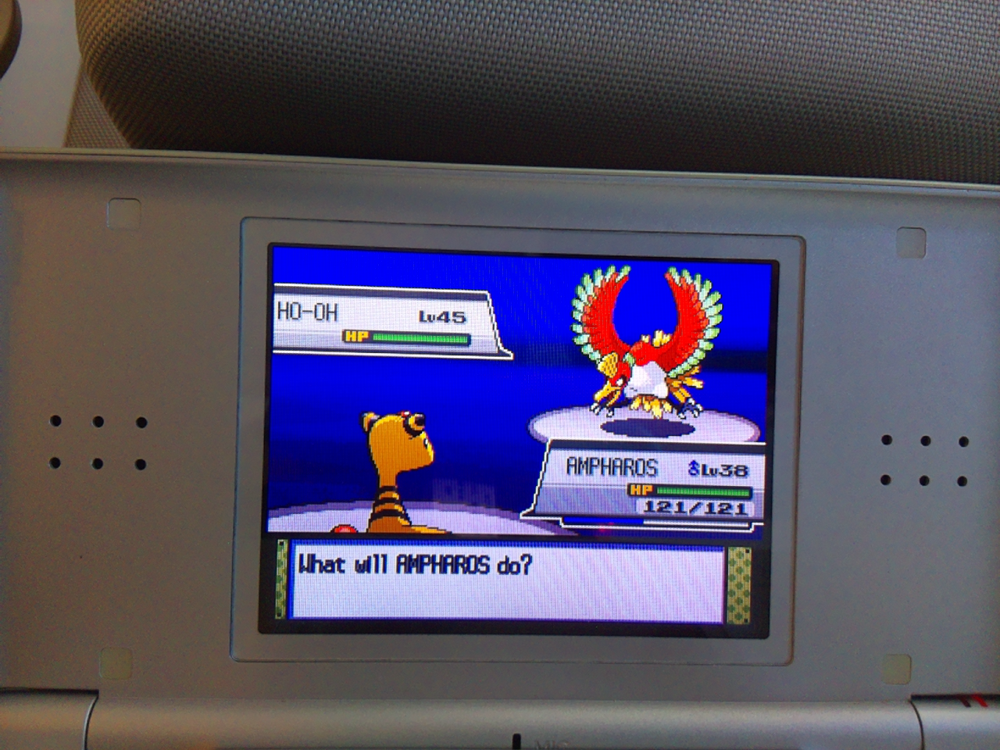
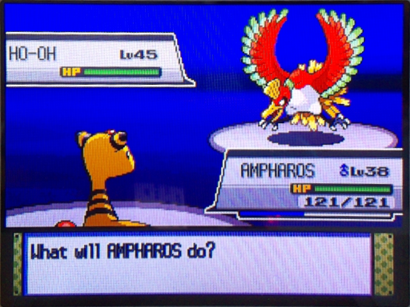
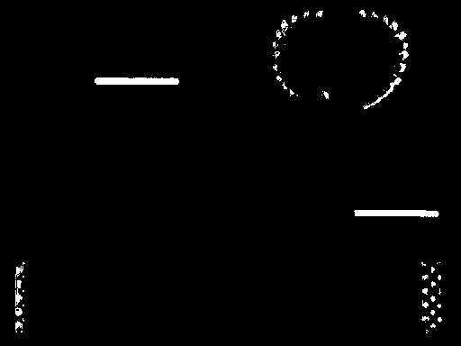
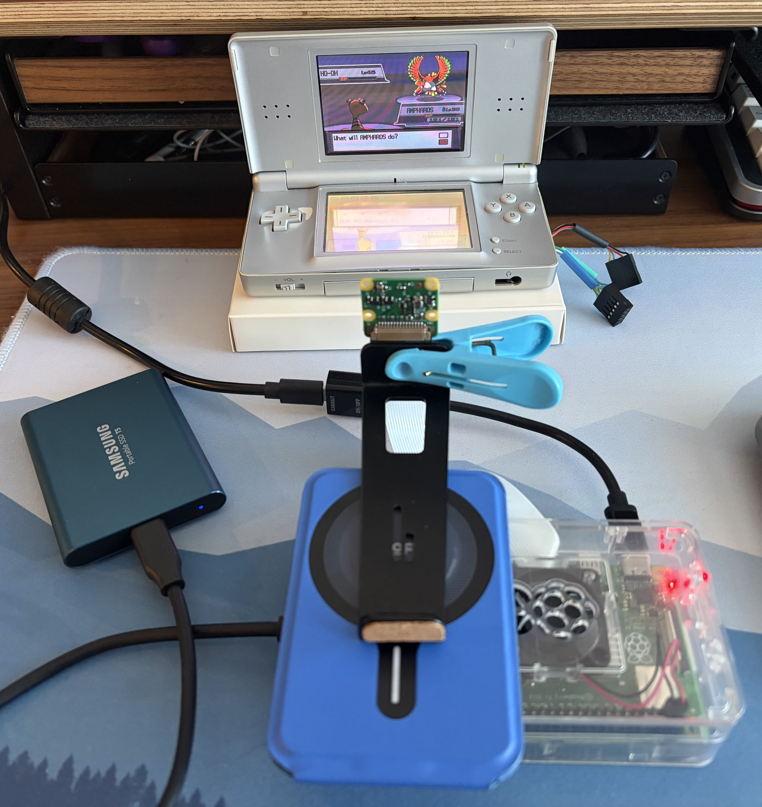
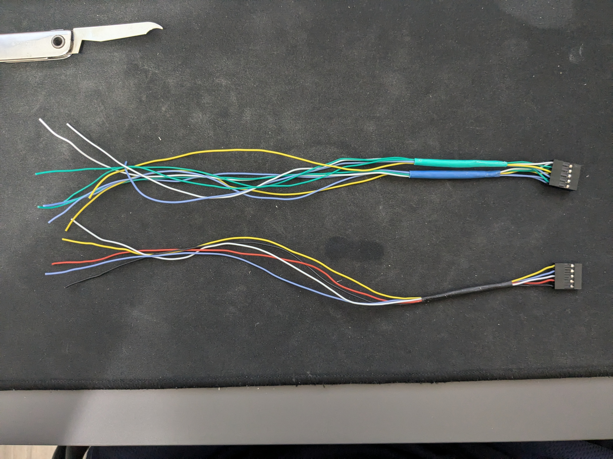
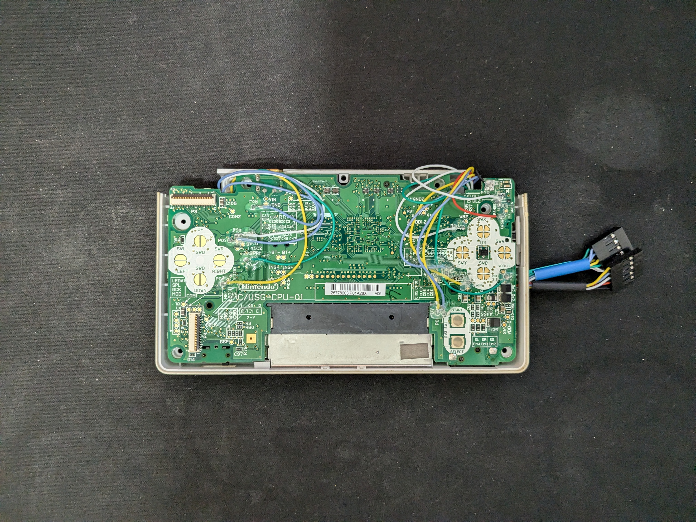
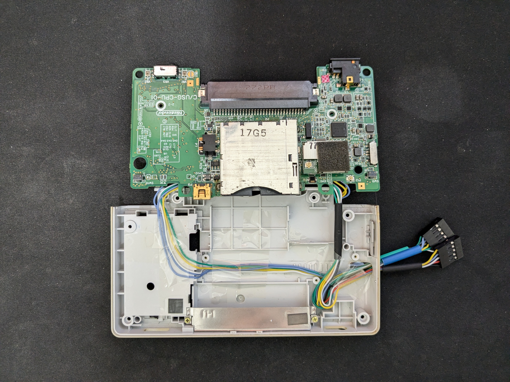
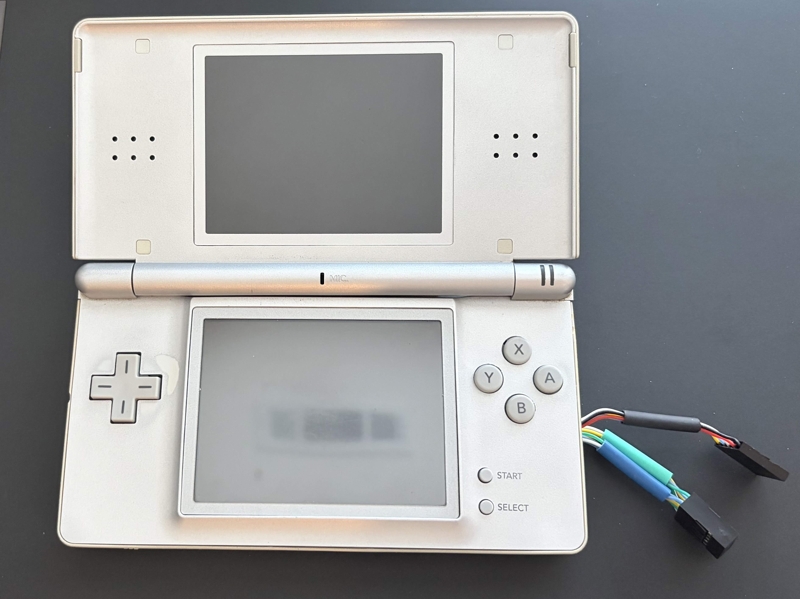
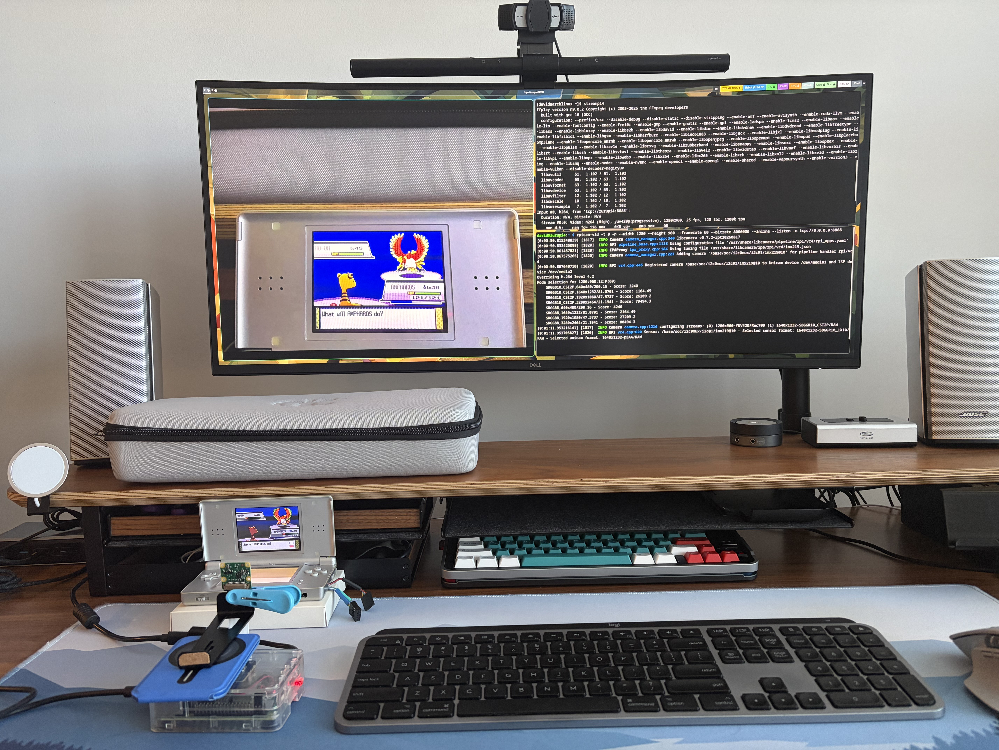

Project Overview
Status: In progress
I'm building this project to automate shiny hunting in Pokemon HeartGold and SoulSilver on a Nintendo DS Lite. The goal is to have a Raspberry Pi 4 watch the screen through a camera, check the Pokemon, and press the buttons needed to repeat the encounter until a shiny appears. The software is written in C++ with OpenCV for image processing.
Context
Shiny Pokemon have different colors from their normal versions. For a soft-reset hunt, you save before an encounter, check the Pokemon, then reset and try again if it isn't shiny. This project is meant to handle that repeated process on the actual DS hardware.
I chose to check the Pokemon's colors instead of looking for the brief sparkle animation. The Pokemon stays on screen, which gives the program more time to check it. The intended behavior is to reset only when the Pokemon is confirmed not shiny. If the result is unclear, the program should stop so it doesn't reset over a shiny.
Current Implementation
So far, I've focused on capturing the screen and building the image processing needed to read it. The full hunting process is not connected yet.
- Screen capture: Added camera input through libcamera and code to locate, straighten, and crop the DS top screen for processing.
- Image replay: The application can run through saved camera photos, so I can work on image processing without the camera connected.
- Battle detection work: Added health-bar detection as a step toward recognizing when the game is in a battle.
- Ho-Oh reference data: Added normal and shiny reference sprites and an initial set of color thresholds. The shiny classifier is still to be implemented and validated with real shiny captures.
- Tests: Added GoogleTest tests for capture and vision, with recorded images from day, sunset, and night encounters.
Behind the Scenes: One Frame
The screenshots below show how a single captured frame moves through the current processing pipeline, from the raw image to a cropped, stenciled output.



The health-bar detector checks only the two expected health-bar regions for a horizontal run of at least 70 pixels, allowing gaps of up to two pixels for camera noise. This checks for green health bars; it doesn't tell us whether the Pokemon is shiny.
Equipment and Rig Setup


I'm using a Nintendo DS Lite, a Raspberry Pi 4, and a Raspberry Pi Camera Module V2 aimed at the top screen. For now, a clip and stand hold the camera in place, and a box raises the DS to the right height. It's a simple setup, but it works for the capture work I'm doing.
The DS has thin wires connected to its button test points, with female connectors coming out through the stylus compartment. This gives me a place to connect the button-control circuit while keeping the original buttons usable.
I might 3D print an enclosure to hold everything together later. If this setup stays stable enough, I may just keep using it.
Bringing the button connections outside








Checking the camera view
Before starting a capture run, I SSH into the Raspberry Pi from my Linux computer and start a camera stream. I view it with ffplay over TCP to check the framing and camera angle. This is a separate setup step for now; I don't have a live preview while the capture application is running.


Current Challenges
- The Camera Module V2 has manually adjustable focus. Since there's no live preview during a run, I check the camera preview beforehand for blur and make sure the contrast looks right, not too dark or washed out
- When I add GPIO control, I want to explore the delay between capturing a frame, processing it, and pressing a button. The game may have moved on by the time an action happens
- During an encounter, I want to avoid inputs like A that could trigger an attack while the next frame is still being checked
Next Steps
- Finish recognizing the game screen and checking whether the Pokemon is shiny, including cases where the image is unclear.
- Add the hunt logic and GPIO button control for emulating DS button presses.
- Connect capture, detection, and button presses into one loop, then test a complete soft-reset hunt on the DS.
Code
Code and build instructions can be found in my GitHub repository.